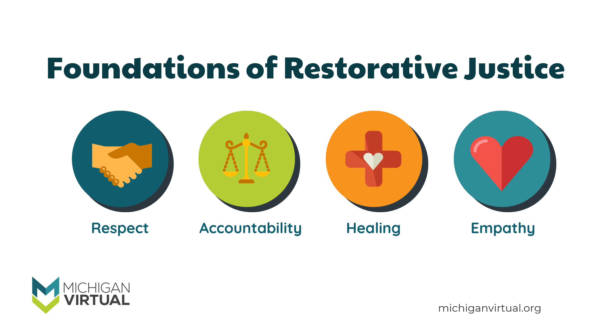

Job Experience:
Restorative Justice Youth leader:
2nd year with this position
In my first year, I was also a part of the Restorative Justice Action Team in which we would have bi-weekly meetings with school staff to express and discuss concerns students have and how to deal with them. Unfortunately this position was dissolved as school staff and RJAT schedules conflicted.
As a RJ, we aim to help develop a community within our school and to help repair any harm done in conflicts & relationships.
Product Manager:
6 months with this position
I’ve been placed in a leadership role to oversee the progress being made regarding game projects. I act as a sort of translator between my team members and our mentors, but also for each other. I send reminders/announcements twice a week to keep everyone updated on what’s to be worked and what they might’ve missed from the last time they were present. I also have to keep in mind everyone’s schedule and how much they are able to put into our game without sacrificing anything. Team members also rely on me to run through their code/work and to find any mistakes. Also responsible for finding alternatives if we’re unable to get something done, such as finding free-to-use assets to use if we’re unable to make them ourselves in time.
Babysitting:
8 years
Picking up and taking care of my younger brother ever since 5th grade. Taking care of him has allowed me to become more aware of other’s sensitivities. Occasionally, I’m tasked with looking after my cousins. Through babysitting, it has allowed me to be able to work well with kids.
Warby Parker Work Place Challenge:
6 weeks:
We had been tasked with finding a solution to any user issue found on the Warby Parker website that helped connect the in-store shopping experience as well as the online shopping experience. Throughout the weeks, me and my team had learned the thought process behind the companies as well as how to make prototypes through Adobe XD.